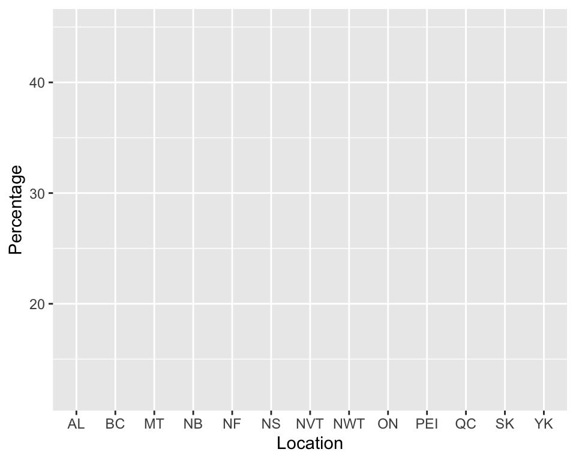
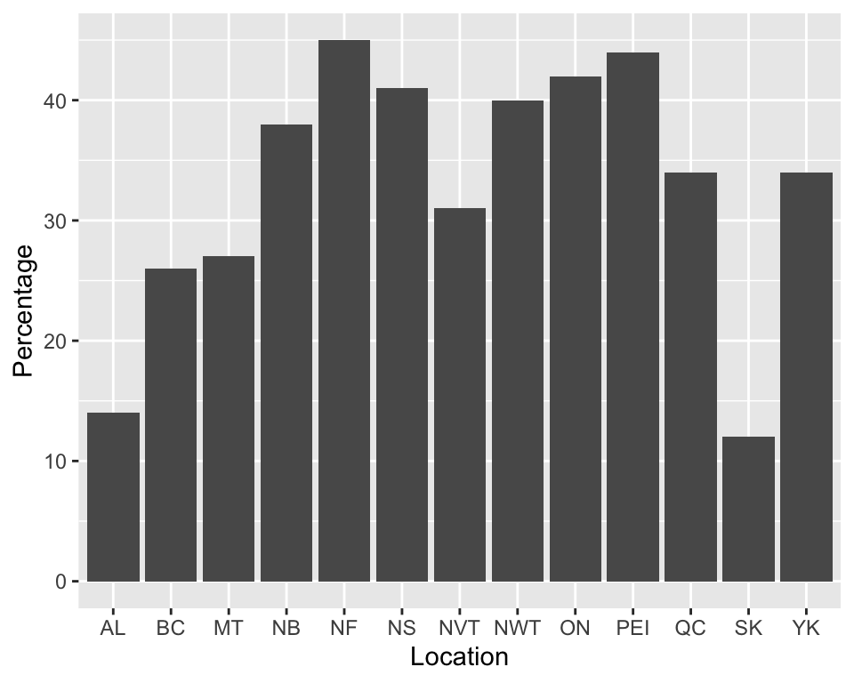
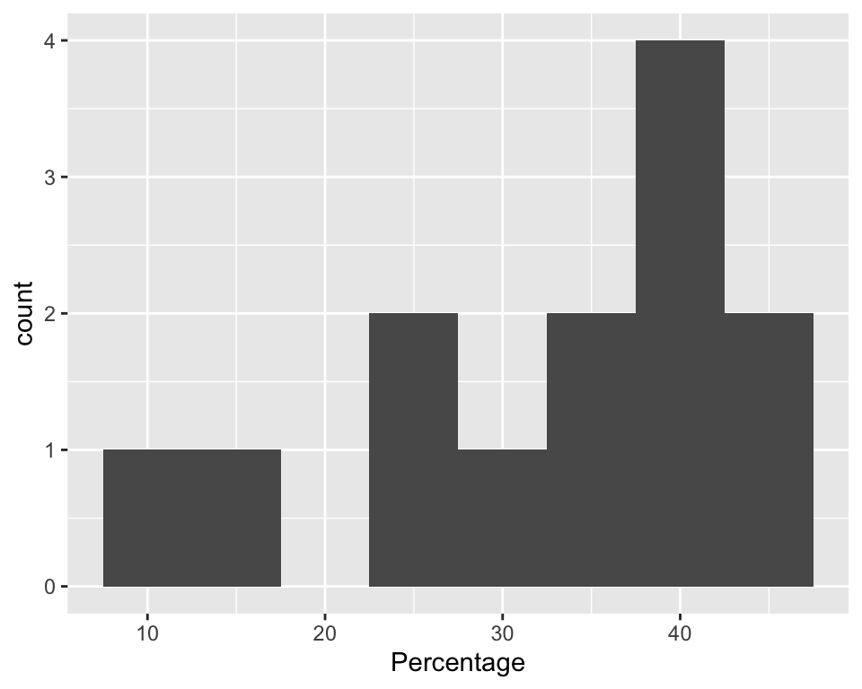
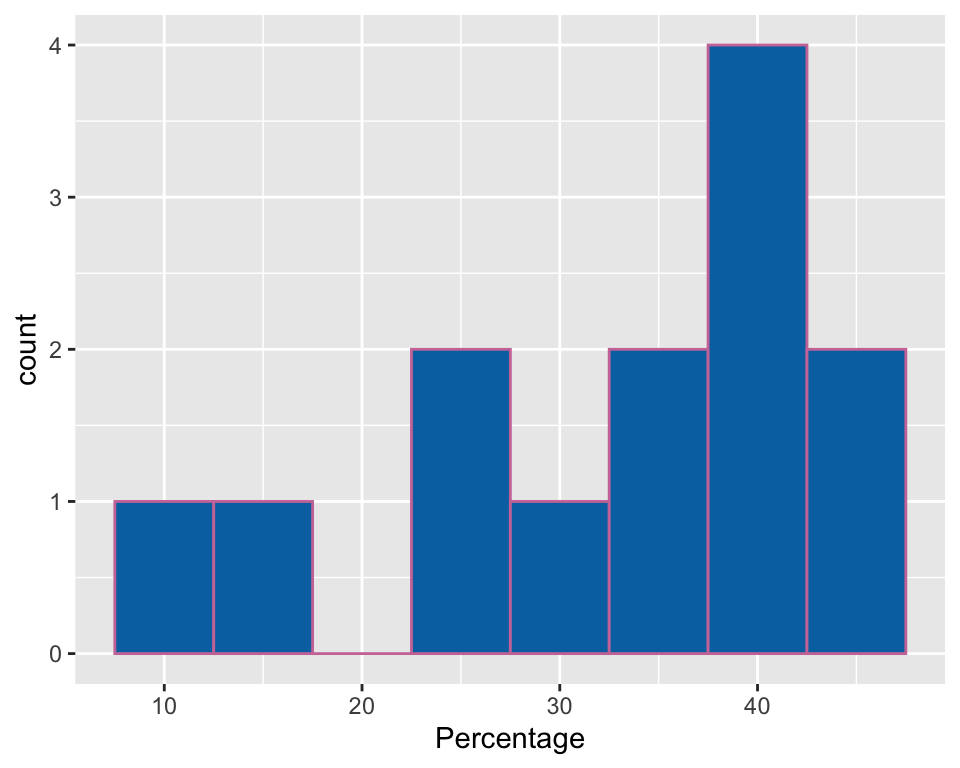

R has an ever-growing number of packages, but a group of them that is really important to know about are those that make up the tidyverse. The tidyverse was created by statistician Hadley Wickham and includes an array of packages that do everything from creating plots to manipulating data.
This tutorial will provide a broad overview of two of the most important packages: dplyr and ggplot2 and then discuss some the other core packages in the tidyverse.
First, you need to install tidyverse packages on your computer and load them for that session of R like this:
install.packages("tidyverse")
library(tidyverse)The cool thing here is that this installs all of the tidyverse packages to your computer. Now, we are ready to go…into the tidyverse.1
One of the most used tidyverse packages is the ggplot2 package. This package allows the R user to make beautiful visualizations of data. Another tutorial will go more in depth into ggplot2, but this tutorial provides an overview of this powerful tool.
The basic command that you begin with for ggplot2 is ggplot(). Inside the parentheses, you then tell ggplot what data you are using and what the x and y variables are for that visualization. Inside the parentheses of ggplot() you will first write the name of the dataset, then put a comma, and finally write aes(x=, y=) to identify the x and y variables you wish to plot. In some cases, you will just be looking at counts of data, so you will just have an x here.
In another tutorial, we used data from the 2019 Canadian Election to make a histogram of election results by province/territory using the hist command. This data is available to you separately and you should change the file path so that you can load it into R on your computer if you want to replicate the below visualizations.
Let’s say that you wanted to make a plot using ggplot and “Location” was your x variable and “Percentage” was your y variable. Your code would look like this:
## -- Attaching packages --------------------------- tidyverse 1.3.0 --## v ggplot2 3.3.2 v purrr 0.3.4
## v tibble 3.0.2 v dplyr 1.0.0
## v tidyr 1.1.0 v stringr 1.4.0
## v readr 1.3.1 v forcats 0.5.0## -- Conflicts ------------------------------ tidyverse_conflicts() --
## x dplyr::filter() masks stats::filter()
## x dplyr::lag() masks stats::lag()
This has set up the foundation for our plot, but hasn’t actually put any data on that. To do that, you need to add something else to your code. Let’s say that we want a bar chart that shows the percentage of the vote that Justin Trudeau’s Liberal Party received in each Province/Territory. You would add + geombar(stat=identity) to your code. Overall, your code would now look like this; now your plot isn’t just a blank grid.

This is one cool way to visualize this data, but you might also be interested in grouping provinces/territories together by Liberal Party vote percentage to see the typical values for how well they did in that area. To do that, you no longer would have a “y” variable because you want the y axis to represent counts of the number of provinces that fall into that bin (e.g., between 10 and 15% of the vote). You can also set the bin size in R by using the binwidth= command to tell R how wide to make the bins. The initial binwidth is set fairly narrowly, so you will often want to use this command to expand it.

Once you’ve create a plot in ggplot, there are a bunch of other neat things you can do with it, including changing the color of both the interior and border of the bars. Please note here that you can enter in colors using either names or hex codes; here I use codes for color-blind friendly colors. 
There are lots of other plots you can make in ggplot2 including density plots (geom_density), dot plots (geom_dot), and line plots (geom_line), among many others. The ggplot2 tutorial goes more in depth about them and a cheat sheet for ggplot2 is also available here.
Another powerful tidyverse package is dplyr, which allows for data manipulation. A very important part of dplyr is the pipe operator “%>%”. This operator helps simplify your code when you are doing multiple things at once.
One thing that dplyr can do is help select a subset of cases using the filter command. For example, returning to the 2019 Canadian election data set, let’s say that we wanted to select cases from Atlantic Canada (i.e, New Brunswick, Nova Scotia, Prince Edward Island, and Newfoundland & Labrador).
Below is the code that you can use to filter these cases. The Atlantic variable exists as both a numeric variable and a string (i.e., word) variable to demonstrate how you would filter for either type of variable.
You may want to do something with the subset of data once you’ve filtered it. Here, I create a new variable in R for Atlantic Canada and then find the mean.
## [1] 42You can also use dplyr to arrange variables in order based on the level of another variable. For example, let’s say that we wanted to rank the provinces/territories by their vote percentage for the Liberals. An example of the code you would use to do that is below.
Still another thing you might want to do is use the existing variables you have to create other variables. Currently, the vote percentages are written as numbers from 0 to 100, but you might instead want them to be decimals from 0 to 1. Using the below code, I created a new variable representing the percentage of the votes Liberals received expressed in decimal form.
Finally, sometimes you might want to calculate a summary statistic for a variable. If we wanted to know the mean percentage of the votes that the Liberals received, the summarize command in dplyr would be just what we need!
What if we wanted to find out the mean percentage that Liberals received outside Atlantic Canada? Here, we would have to combine two functions, filter and summarize.
There are many other things you can do with dplyr, but this provides a first overview of it. For more details about what you can do in dplyr, check out the dplyr tutorial or check out this cheat sheet.
Another package that you can use for data manipulation that is part of the tidyverse is the tidyr package. Some of the commands in the cheat sheet above make use of tidyr.
Beyond ggplot2 and dplyr, there are several other core packages in tidyverse. In addition to the aforementioned tidyr, which also helps with data manipulation, there is readr, which can be used to import some types of data, purr allows you to apply functions, and forcats can be helpful when working with factor (i.e., categorical) variables. Rounding out the eight core packages are tibble, which can be used for working with tabular data, and stringr, which is helpful for working with string variables (i.e., word variables).
A guide to the main tidyverse packages with a cheat sheet for ggplot2 and dplyr is available here.
Finally, a final package not covered in these cheat sheets is the broom package, which can be used to clean up regression output.
Here are two quick quiz questions to review the material in this tutorial:
This is, indeed, an homage to the excellent 2018 movie, “Into the Spiderverse.”↩︎